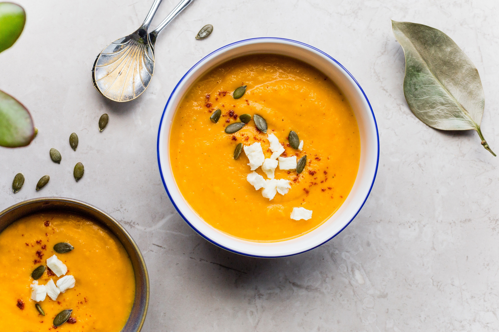

Dal

Dal is a delicious and versatile Indian dish made with lentils. There are many different ways to make it, but here's a simple recipe for a basic dal that's perfect for beginners:
Ingredients:
- 1 cup toor dal (split pigeon peas), rinsed and soaked for 30 minutes (optional)
- 3 cups water
- 1/2 teaspoon turmeric powde
- 1 teaspoon salt
- 1/2 teaspoon cumin seeds
- 1 green chili, chopped (optional)
- 1 small onion, finely chopped
- 1 small tomato, finely chopped
- 1/4 teaspoon coriander powder
- 1/4 teaspoon garam masala powder
- Fresh cilantro, chopped, for garnish
Instructions:
- Cook the dal: In a pressure cooker, combine the rinsed dal, water, turmeric, and salt. Pressure cook for 3-4 whistles or until the dal is soft and mushy. If you don't have a pressure cooker, simmer in a pot for 30-40 minutes, adding more water as needed.
- Make the tempering: While the dal is cooking, heat the ghee or oil in a small pan over medium heat. Add the cumin seeds and cook until they sizzle. Then, add the green chili (if using) and onion, and saute until the onion is softened.
- Add spices and tomatoes: Add the chopped tomato, coriander powder, and garam masala powder to the pan. Saute for 2-3 minutes, until the tomatoes are softened and the spices are fragrant.
- Mash and combine: Mash the cooked dal slightly with a potato masher or fork. Add the dal and the tempering to a pot and mix well.
- Simmer and adjust flavors: Simmer the dal for 5-10 minutes, allowing the flavors to meld. Taste and adjust the salt and spices to your preference.
- Garnish and serve: Garnish with fresh cilantro and serve hot with rice, roti, or naan.